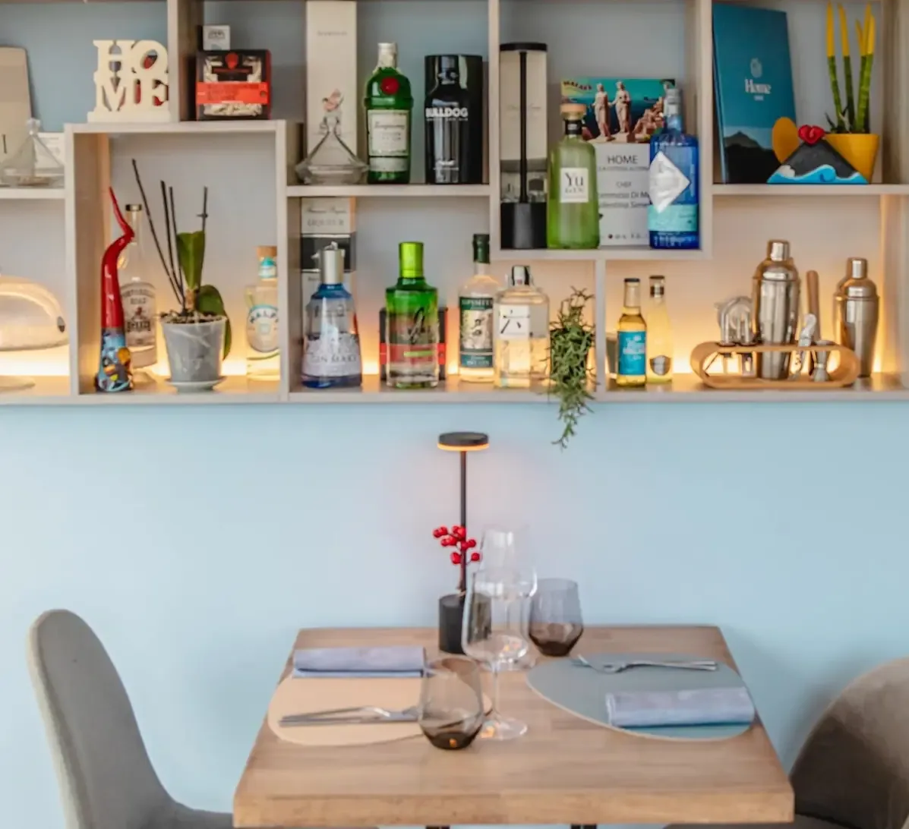
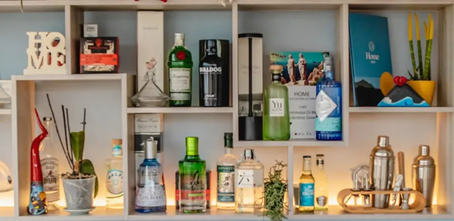
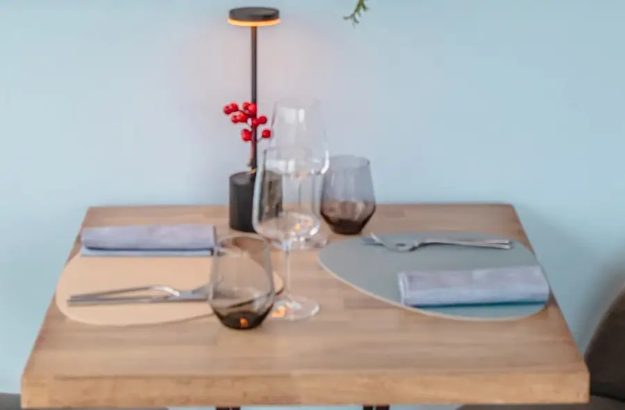

Bellissima esperienza, Buon cibo, servizio top. Bel posto. Una terrazza speciale 😍 Abbiamo preso antipasto con 6 portate e un secondo, due bottiglie di acqua e un calice di vino.
Osteria · Bacoli
Home Piccola Osteria Alternativa
Alternativa a cosa? Venite a scoprirlo.
Via Virgilio, 142, 80070 Bacoli, NA
4,8 su Google
170 recensioni. Ne andiamo fieri, ma lo diciamo solo qui.
Via Virgilio, 142
A Bacoli. Se vedete il 141, siete quasi arrivati.
Si prenota
Scriveteci su WhatsApp o chiamate il 338 313 2601.
di Tommaso Di Meo e Valentina Simeoli
Benvenuti a Home
Osteria dai sapori semplici e tradizionali, dove il gusto spazia tra terra e mare, tra storia e innovazione. Home è sentirsi a casa.
Siamo in Via Virgilio, 142, a Bacoli. Su Google ci date 4,8 stelle su 170 recensioni: grazie, e scusate se ci montiamo un po' la testa.
Per prenotare scriveteci su WhatsApp o chiamate il 338 313 2601.
4,8voto su Google
170recensioni Google
Meril giorno in cui ci riposiamo
Il locale
Pareti color cielo, legno e bottiglie in bella vista
Il locale è questo: un tavolo apparecchiato, una mensola piena di bottiglie e, sì, la scritta HOME. Per il resto venite a vederlo: le foto non rendono l'idea (e non profumano).



Home
Home è sentirsi a casa.
Lo abbiamo scritto anche su Google. Adesso tocca a voi venire a controllare.
In cucina
Terra e mare, storia e innovazione.
Osteria dai sapori semplici e tradizionali, dove il gusto spazia tra terra e mare, tra storia e innovazione. Insomma: non vi annoierete.
In terrazza
L'apericena, se vi va.
Sulla nostra scheda Google trovate «L'apericena in terrazza»: calice di vino, tre sfizi e un assaggio di primo. Per prezzi e posti chiamateci.
Recensioni
Lo dicono loro, non noi
Recensioni pubblicate su Google, riportate come sono scritte. Leggile tutte →
4,8
170 recensioni su Google
È un posto molto carino, gestito professionalmente e simpaticamente da due giovani ragazzi. Il terrazzo non ha una vista straordinaria ma in lontananza si scorge il tipico panorama di Bacoli Il cibo è ben curato con punte di particolare interesse. In particolare abbiamo apprezzato molto il baccalà e lo spaghetto con lupini e friggitelli Una bella sorpresa, con un futuro promettente Complimenti
Una scoperta... Home Piccola Osteria Alternativa... e siamo rimasti davvero soddisfatti. Menu originale e ben studiato: ottimi i 6 antipasti, in particolare il polpo con patate e sconcigli e le alici con guacamole e agretti, davvero sorprendenti. Molto buoni anche il baccalà mantecato e i tacos con soffritto di totano. I primi una delizia: gnocco di patate con lupini e zucchine delicato e ben equilibrato, mentre i mezzanelli con genovese di tonno erano saporiti e particolari. Chiusura perfetta con un tiramisù alternativo e delle crostatine al limone davvero gustose. Servizio curato e atmosfera accogliente. Consigliato per chi cerca qualcosa di diverso dal solito!
Vieni a trovarci
Orari e dove siamo
Orari di apertura
| Lunedì | 16:30–24:00 |
| Martedì | 12:00–16:00 18:30–24:00 |
| Mercoledì | Chiuso |
| Giovedì | 16:30–24:00 |
| Venerdì | 12:00–16:00 18:30–24:00 |
| Sabato | 12:00–18:00 18:30–24:00 |
| Domenica | 12:00–17:00 |
Orari
Orari della scheda Google: nei festivi possono cambiare, chiamateci per conferma.
Bacoli, Bacoli
Un tavolo? Scriveteci
Su WhatsApp o al 338 313 2601. Chiedete pure anche della terrazza: la risposta ve la dà chi c'è in sala.